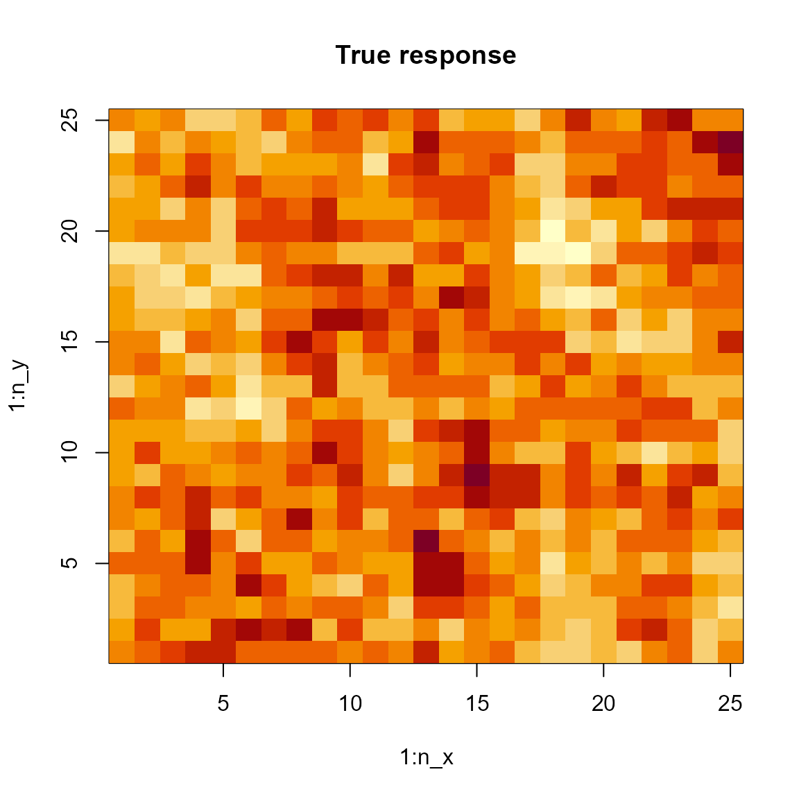

library(tinyVAST)
library(mgcv)
library(fmesher)
library(pdp) # approx = TRUE gives effects for average of other covariates
library(lattice)
library(ggplot2)
set.seed(101)
options("tinyVAST.verbose" = FALSE)tinyVAST is an R package for fitting vector
autoregressive spatio-temporal (VAST) models using a minimal and
user-friendly interface. We here show how it can fit spatial
autoregressive model. We first simulate a spatial random field and a
confounder variable, and simulate data from this simulated process.
# Simulate a 2D AR1 spatial process with a cyclic confounder w
n_x = n_y = 25
n_w = 10
R_xx = exp(-0.4 * abs(outer(1:n_x, 1:n_x, FUN="-")) )
R_yy = exp(-0.4 * abs(outer(1:n_y, 1:n_y, FUN="-")) )
z = mvtnorm::rmvnorm(1, sigma=kronecker(R_xx,R_yy) )
# Simulate nuissance parameter z from oscillatory (day-night) process
w = sample(1:n_w, replace=TRUE, size=length(z))
Data = data.frame( expand.grid(x=1:n_x, y=1:n_y), w=w, z=as.vector(z) + cos(w/n_w*2*pi))
Data$n = Data$z + rnorm(nrow(Data), sd=1)
# Add columns for multivariate and temporal dimensions
Data$var = "density"
Data$time = 2020We next construct a triangulated mesh that represents our continuous spatial domain
# make mesh
mesh = fm_mesh_2d( Data[,c('x','y')], cutoff = 2 )
# Plot it
plot(mesh)Finally, we can fit these data using tinyVAST
# Define sem, with just one variance for the single variable
sem = "
density <-> density, spatial_sd
"
# fit model
out = tinyVAST( data = Data,
formula = n ~ s(w),
spatial_graph = mesh,
control = tinyVASTcontrol(getsd=FALSE),
sem = sem)We can then calculate the area-weighted total abundance:
# Predicted sample-weighted total
integrate_output(out, newdata = out$data)
#> Estimate Std. Error Est. (bias.correct) Std. (bias.correct)
#> -104.15036 29.90545 -104.15036 NA
# integrate_output(out, apply.epsilon=TRUE )
# predict(out)
# True (latent) sample-weighted total
sum( Data$z )
#> [1] -92.89517Percent deviance explained
We can compute deviance residuals and percent-deviance explained:
# Percent deviance explained
out$deviance_explained
#> [1] 0.5051624We can then compare this with the PDE reported by
mgcv
start_time = Sys.time()
mygam = gam( n ~ s(w) + s(x,y), data=Data ) #
Sys.time() - start_time
#> Time difference of 0.03207898 secs
summary(mygam)$dev.expl
#> [1] 0.3517756where this comparison shows that using the SPDE method in tinyVAST results in higher percent-deviance-explained. This reduced performance for splines relative to the SPDE method presumably arises due to the reduced rank of the spline basis expansion, and the better match for the Matern function (in the SPDE method) relative to the true (simulated) exponential semivariogram.
It is then easy to confirm that mgcv and tinyVAST give (essentially) identical PDE when switching tinyVAST to use the same bivariate spline for space.
Visualize spatial response
tinyVAST then has a standard predict
function:
predict(out, newdata=data.frame(x=1, y=1, time=1, w=1, var="density") )
#> [1] 0.3649899and this is used to compute the spatial response
# Prediction grid
pred = outer( seq(1,n_x,len=51),
seq(1,n_y,len=51),
FUN=\(x,y) predict(out,newdata=data.frame(x=x,y=y,w=1,time=1,var="density")) )
image( x=seq(1,n_x,len=51), y=seq(1,n_y,len=51), z=pred, main="Predicted response" )
We can also compute the marginal effect of the cyclic confounder
# compute partial dependence plot
Partial = partial( object = out,
pred.var = "w",
pred.fun = \(object,newdata) predict(object,newdata),
train = Data,
approx = TRUE )
# Lattice plots as default option
plotPartial( Partial )Alternatively, we can use the predict function to plot
confidence intervals for marginal effects:
# create new data frame
newdata <- data.frame(w = seq(min(Data$w), max(Data$w), length.out = 100))
newdata = cbind( newdata, 'x'=13, 'y'=13, 'var'='n' )
# make predictions
p <- predict( out, newdata=newdata, se.fit=TRUE, what="p_g" )
# Format as data frame and plot
p = data.frame( newdata, as.data.frame(p) )
ggplot(p, aes(x=w, y=fit,
ymin = fit - 1.96 * se.fit, ymax = fit + 1.96 * se.fit)) +
geom_line() + geom_ribbon(alpha = 0.4)